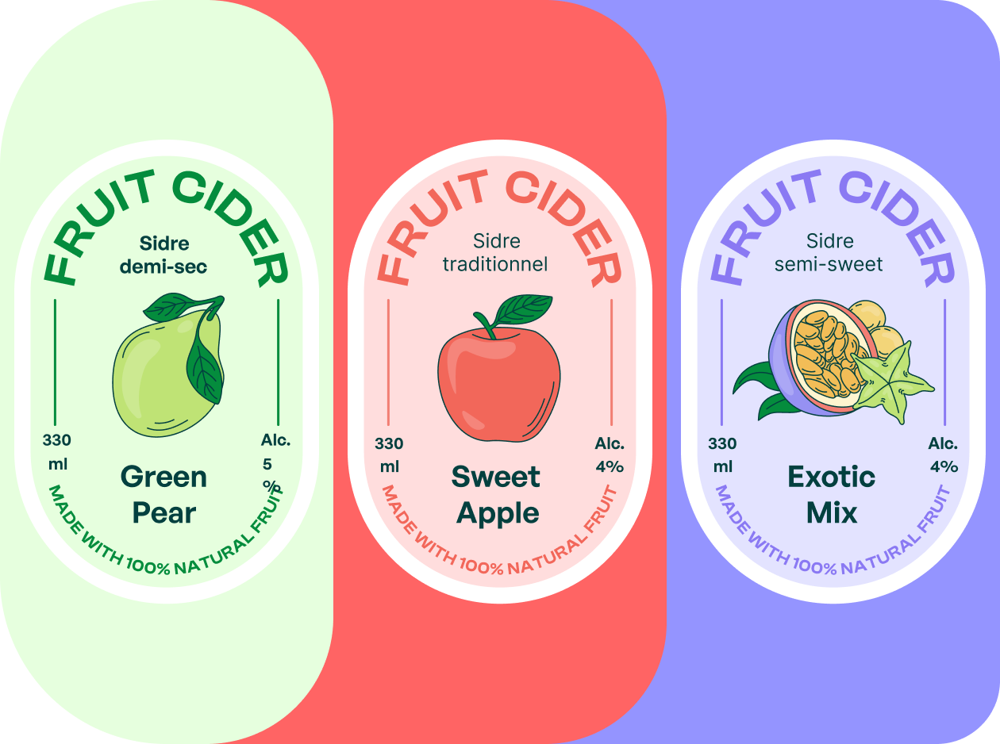
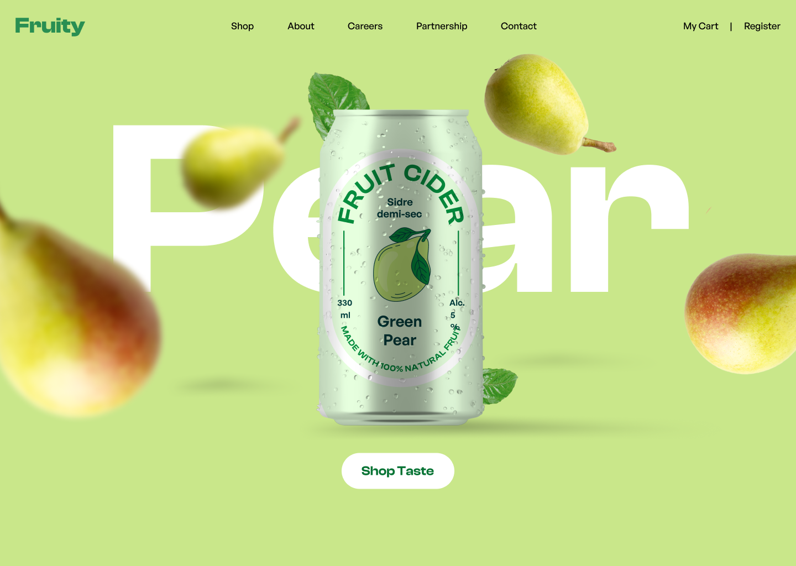
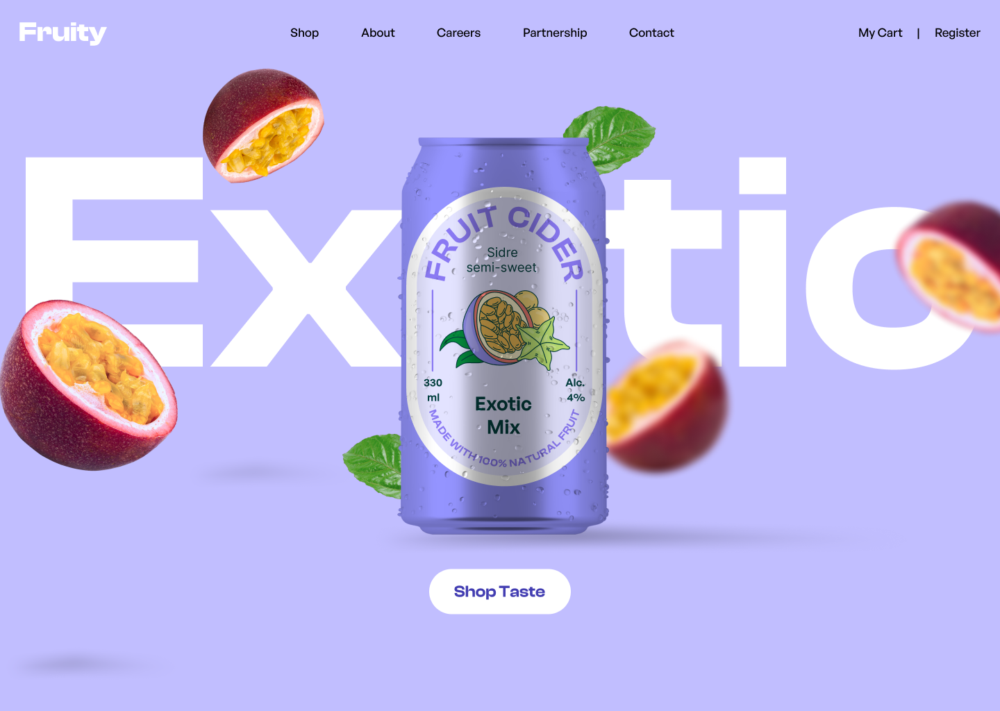

Benchmark
Reviewed the visual language of cider and beverage landing pages to identify where interaction was missing.
A playful landing page concept where flavor discovery becomes the main interaction through a 3D carousel, expressive typography and fruit-led visual storytelling.
Fruit cider is inherently visual: color, fruit, freshness and flavor are easy to communicate physically but often become static banners online. This project explored how interaction could make the product feel more alive without letting the interface overpower it.
Competitor benchmarking showed a common pattern of static hero sections and product imagery. The opportunity was not to add interaction everywhere, but to make one interaction memorable.
The core question became: how might a flavor slider make the product itself the interface?
Reviewed the visual language of cider and beverage landing pages to identify where interaction was missing.
Framed the experience for younger digital audiences who respond to bold visual identity, novelty and quick product discovery.
Tested slider layouts, fruit compositions, typography scale and color directions before committing to the 3D carousel.
Built the final interaction in Figma around three flavors: Pear, Sweet Apple and Exotic.
Instead of treating the slider as a navigation element underneath the hero, the carousel becomes the hero itself. Changing flavor changes the product, palette and fruit composition together.



The project reinforced a useful UI principle: motion and interaction are strongest when they explain or enhance the product. Here, the 3D carousel is not decoration — it is the mechanism for discovering flavor.